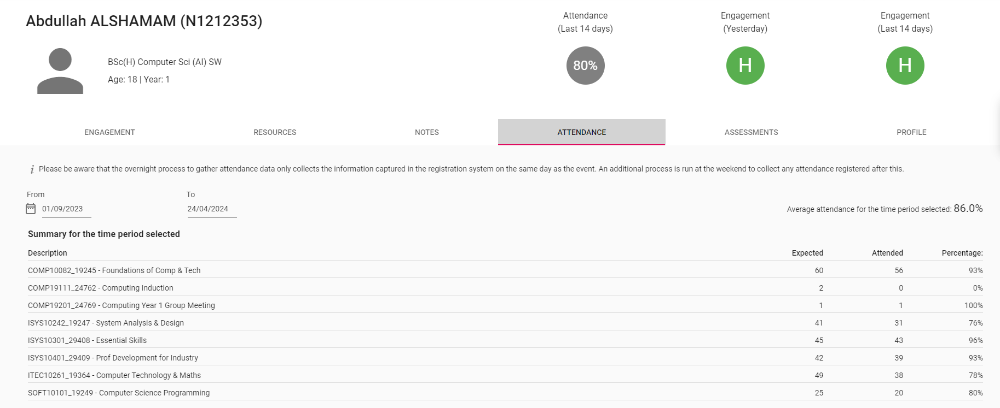
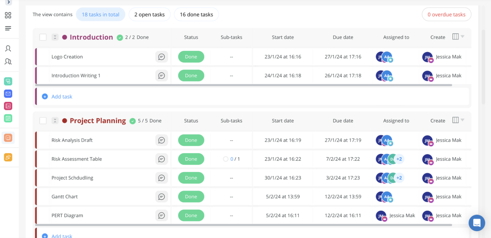

Reflection on Professional Conduct
I will be reflecting on the professional conduct of the British Computing Society due to its high credibility in the UK. While it does not directly “govern the conduct of individual or businesses”(BCS 2024), it is used as a guide to being a successful member of the British Computing Society:
There are 4 main sections:
Public Interest:
The inclusion of other people in IT by considering privacy, security, and without discriminating others. It benefits breaking the barrier of entry to IT allowing for everyone to be connected with one another.
Professional Competency and Integrity:
To strive for improving your performance, and accepting the limitations of your knowledge. If something is beyond your expertise, do not undertake it. Examples include accepting criticism constructively, fulfilling your responsibilities in your field, and developing your skills continually.
Duty to Relevant Authority:
Carrying out responsibilities for yourself and your team with due care, “while maintaining discretion and ethical standards”(BCS 2022). This includes avoiding conflicts of interest, respecting the organization, and not exploiting others.
Duty to the Profession:
Seek to assist others in their professional development and be aware that your actions reflect on the professional body as a whole, potentially impacting your company and the wider community.
Following the code of conduct, I have engaged in various extracurricular activities to enhance my competency and integrity. These activities include the GRIT workshop, attendance at the London Tech Expo, and completing online courses aimed at professional development.
Other artifacts include...
High attendance throughout the academic year showing interest in IT (Section 2)
Co-leading partners tasks as well as carrying out individual responsibilities in a system analyses group assessment (Section 3)
Future Improvement
In my university projects, I would like to explore section 1 and 4 by adding functionalities for inclusion of others, as well as supporting in their IT journey. which is why I decided to join Student Mentor for the next academic year at NTU.
Reference
BCS, The Chartered Institute for IT, 2022. BCS Code of Conduct [online]. Available at: https://www.bcs.org/membership-and-registrations/become-a-member/bcs-code-of-conduct/ Accessed 22 April 2024.